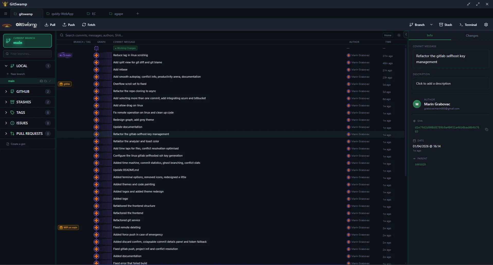
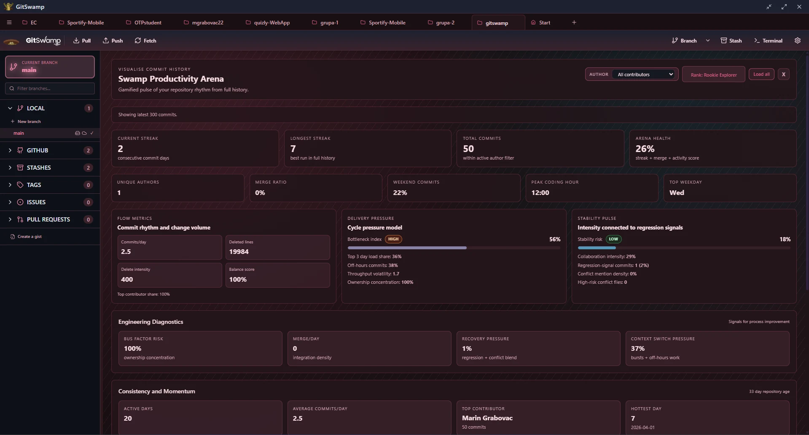
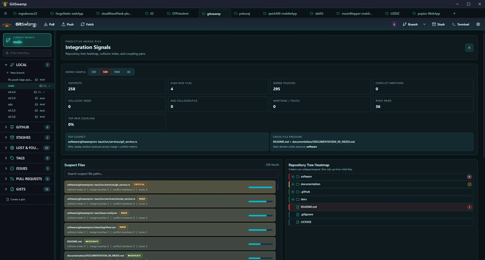
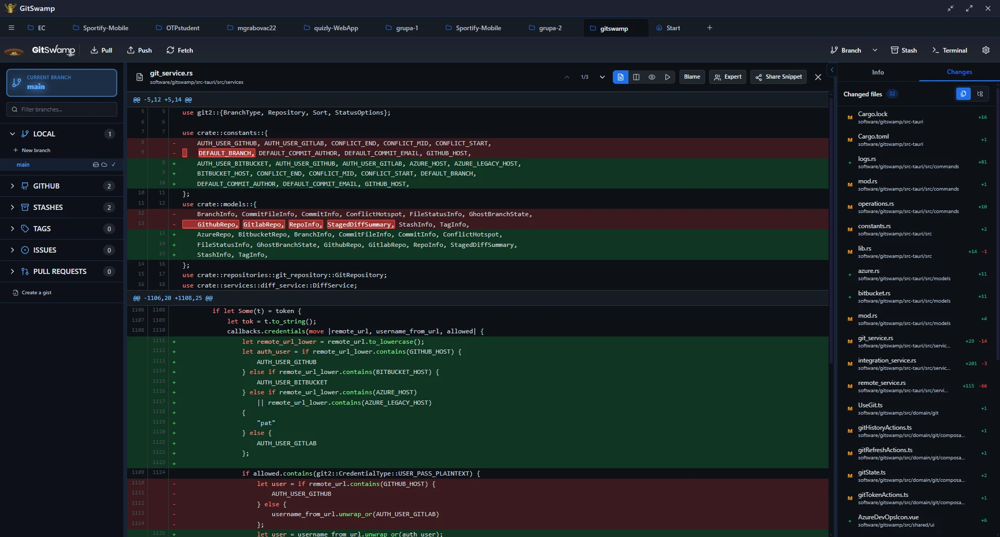

History intelligence
See the whole galaxy.
Branches, merges and lost commits become a navigable 3D map. Zoom out for the story. Zoom in for the exact change.
A desktop Git client that turns your repository into a living map. Stage by hunk, read the whole history, and move faster without handing your code to the cloud.

GitSwamp is built for the messy middle: the hotfix at 23:40, the merge with five conflicts, the branch nobody remembers. It gives you the map, not just the buttons.
Branches, merges and lost commits become a navigable 3D map. Zoom out for the story. Zoom in for the exact change.
Pick apart a diff hunk by hunk. Commit only what belongs in the commit.
Every risky command is previewed. Create a safety stash before the terminal bites back.
A tiny Tauri shell around a Rust Git engine. No Electron weight. No account. No cloud middleman.
Every workflow below ships in the desktop app. No paid tiers, no feature vault, no “contact sales” for the useful part.
GitSwamp started with a simple annoyance: desktop Git clients either hide too much or make the hard parts harder. So we built the client we wanted - visual enough to understand the whole repo, local enough to trust with it.
Your repository stays on your machine. No sync service, no telemetry, no account required.
Tauri and Rust keep the app small and the operations immediate. It feels like it belongs on your desktop.
AGPL-3.0 licensed. Fork it, audit it, break it, improve it. The swamp belongs to everyone.
The first Git client that makes a 400-commit repo feel like a place, not a log.
— someone with too many branchesA few corners of the swamp. Drag sideways to explore the workspace, galaxy view, diff tools and insight panels.



GitSwamp Mobile is a native Android companion built with Kotlin, Jetpack Compose and JGit. Open or clone a repository, read the graph, review diffs, commit and sync - without a WebView or a cloud account.
eb869695cd5427d4e220504fb792ec0a6e561a083c2b7a56e93ae65803d1615a
Free, open source, and signed. Pick your platform - we'll hand you the latest build straight from the release shelf.
Open the downloaded file to install GitSwamp.
Browsers can't auto-run installers. Your download starts instantly; open the file to finish.
The short version: it is free, local, open source, and it does not need an account. Here is the longer version.
Yes. GitSwamp is free to download and licensed under AGPL-3.0. The complete source code is available on GitHub.
Native desktop builds are available for Windows x64, macOS Apple Silicon, macOS Intel and Linux. Linux ships as a Debian package and a universal AppImage. The Android companion is available as a test APK on this page.
Yes. Repositories, history, diffs and working-tree changes are handled on your device. Network access is only used when you fetch, pull, push or call a provider API.
No. GitSwamp does not include telemetry, advertising or a cloud account requirement. Remote provider tokens stay on your machine.
Download buttons always point to the latest GitHub release. Installed desktop builds use Tauri's signed updater manifest to verify and install new versions.
Yes. GitSwamp Mobile is a native Android companion built with Kotlin, Jetpack Compose and JGit. The current APK is a debug-signed test build for Android 8.0 and newer.